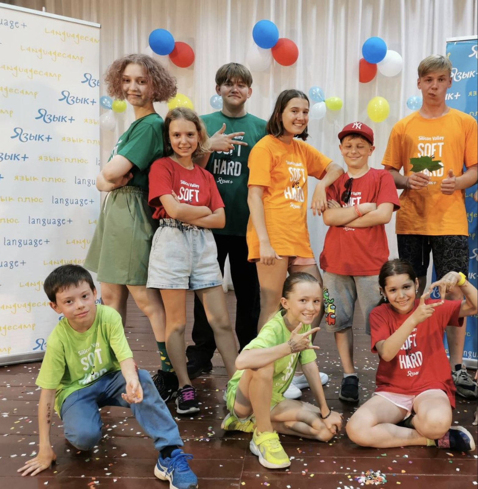
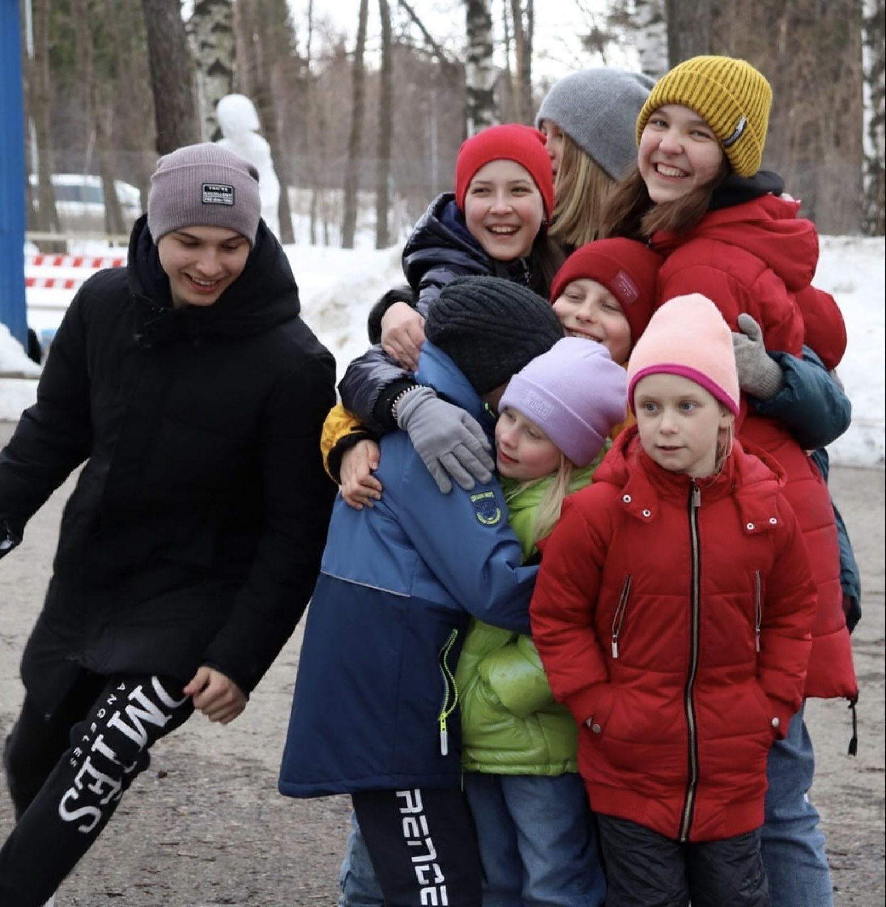

01 · Исходный тезис
Не занять. Дать действовать.
В исходной презентации перечислены десятки активностей. Но её главная идея глубже: ребёнок здесь не только участник программы, а человек, который выбирает, предлагает, выступает и постепенно берёт на себя роль взрослого.
СДВИГ 01от готового расписания — к осмысленному выбору
СДВИГ 02от выполнения задания — к авторству и публичному действию
СДВИГ 03от контроля взрослого — к поддерживаемой автономии
02 · Масштаб практики
Длинная история, устойчивое возвращение
Это не лабораторный эксперимент, а многолетняя педагогическая практика. Цифры ниже задают контекст — и одновременно обозначают, что ещё предстоит измерить.
Источник: внутренняя презентация ЦМО «Язык Плюс». Показатель 90% является операционным наблюдением команды и не заменяет независимую оценку результатов.

03 · Единица среды
Команда важнее возраста
Дети от 7 до 17 лет объединяются в смешанные группы. Капитана и помощников выбирают из числа участников — роль становится способом учиться, а не наградой после обучения.
Выбор создаёт личную ставку
Участник выбирает мастер-класс и лабораторию, может сменить направление через семь дней и живёт в комнате по собственному выбору.
Наблюдаемое действиеВыбирает и объясняет решениеРабочая гипотезаРастёт ощущение авторства
Авторство превращает навык в опыт
Даже семилетний ребёнок может провести мастер-класс при поддержке вожатого. Проекты, концерты и сценки создаются самими детьми.
Наблюдаемое действиеСоздаёт, объясняет, распределяет ролиРабочая гипотезаРазвивается уверенность в действии
Разновозрастность создаёт социальную лестницу
Младшие видят ближайшую следующую роль. Старшие становятся капитанами и помощниками вожатых — по 3–5 человек за смену.
Наблюдаемое действиеПросит помощь и помогает другимРабочая гипотезаУсиливается чувство принадлежности
04 · Исследовательская линза
Три потребности — три механизма
Практики лагеря можно аналитически сопоставить с теорией самодетерминации: автономией, компетентностью и связанностью.
Это интерпретация, а не доказательство эффекта программы.
«Я выбираю действие»
Не отсутствие границ, а возможность влиять на маршрут внутри понятной структуры.
Выбор лаборатории и роли→Гипотеза: больше внутренней мотивации
«Я могу сделать»
Задача становится развивающей, когда сложность растёт вместе с поддержкой и есть видимый результат.
Мастер-класс, проект, выступление→Гипотеза: растёт самоэффективность
Основание модели: R. Ryan, E. Deci, 2000 — Self-Determination Theory. DOI: 10.1037/0003-066X.55.1.68.
05 · Микродизайн дня
Выбор. Действие. Рефлексия.
Цикл повторяется ежедневно. За счёт повторения самостоятельность становится не отдельным событием, а привычной формой участия.
Сформулировать намерение
Тема одноминутного вечернего выступления объявляется заранее и связывается с общей темой смены.
- понять тему
- выбрать позицию
- собрать материал
Проверить себя действием
Лаборатории, спортивные, творческие и командные форматы дают разные способы войти в задачу.
- работать в команде
- провести мастер-класс
- создать проект или сцену
Сделать опыт видимым
Одна минута публичной речи требует выбрать главное, оформить мысль и выдержать внимание аудитории.
- сжать опыт в тезис
- сказать вслух
- получить социальную обратную связь
06 · Длинная траектория участия
Ребёнок растёт не только по возрасту — по роли
Участник
Пробует форматы, выбирает лабораторию, учится просить поддержку.
Автор
Ведёт мастер-класс, защищает проект, готовит выступление.
Капитан
Помогает группе договориться и распределить обязанности.
Помощник
Берёт часть взрослой ответственности, оставаясь внутри поддерживающей среды.
07 · Концептуальная модель
Среда сильнее отдельной активности
Если выбор, посильный вызов и отношения встроены в ежедневный цикл, они могут поддерживать самостоятельное действие.
Самостоятельность
ВыбормаршрутаДействие
с результатомКоманда
и роль
08 · Как превратить практику в исследование
Пять наблюдаемых индикаторов
Следующий шаг — измерять изменения до и после смены и сопоставлять самоотчёт ребёнка с наблюдением педагогов.
Может ли ребёнок назвать решение и объяснить его основание?
мини-интервьюКак часто предлагает действие без прямой инструкции взрослого?
карта наблюденийПросит ли помощь, предлагает ли её и договаривается ли о ролях?
рубрика поведенияНасколько яснее становится одноминутное выступление к концу смены?
единая шкалаВозвращается ли ребёнок и какую следующую роль выбирает?
когортный учётРекомендуемый дизайн: входное и выходное измерение, единые критерии наблюдения, согласие родителей, анонимизированные данные и фиксация возраста/числа смен.
09 · Научная честность
Что уже видно — и что ещё нельзя утверждать
Практика показывает
- многолетнюю устойчивость формата
- высокую долю повторного участия по внутренним данным
- реальную передачу детям задач и ролей
- повторяющийся цикл выбора, действия и речи
Исследование должно проверить
- меняется ли самостоятельность за смену
- какие механизмы дают наибольший вклад
- как эффект зависит от возраста и числа смен
- сохраняются ли изменения после возвращения домой
10 · Главный вывод